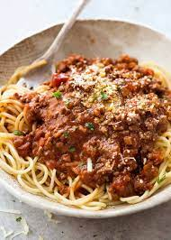

Back
Spaghetti Bolognese

Description
A good family friendly Italian food
Ingredient
- 1 Onion
- 3 spoon of oil
- 3 carrots
- 4 pins of celery leaf
- 1 can of tomatopure
- 400 g of chopped beef
- 3 fad garlic
- 3 dl of water
- 1 spoon of dryed of timian
- 1 spoon of dreyed oregano
- 1 spoon of sennep
- 2 spoon of salt
- 400 g of pasta
Steps to follow
- peel onion, chopped fine
- either peel and wash the celery leaf and chop finn
or come it in a food processor
- Warm a pot with mid high
- put oil in a pot a sauted the onions a few min til they are se through
- After that put carrots and celery leaf in the pot, let the stir for a min or two
- make room in the middle for the tomato pure for it to get taste
- make room in another side in the pot for the meat, make it even
- while the meat is frying wash and terre the squash, put it in when the meat has color
- put the the can of tomato's in and 2-3dl of water
- press the garlic in and tasted with oregano, sennep and salt
- turn down the heat while you make the paste, following the instrction on the embalge
- Serve it when don.